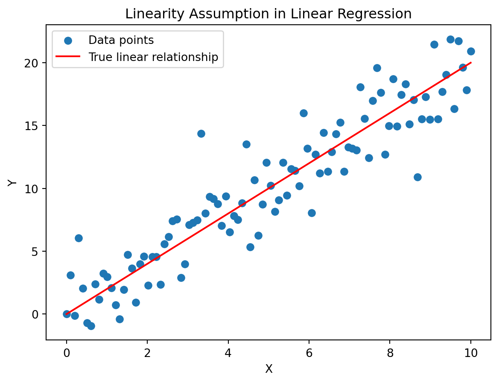
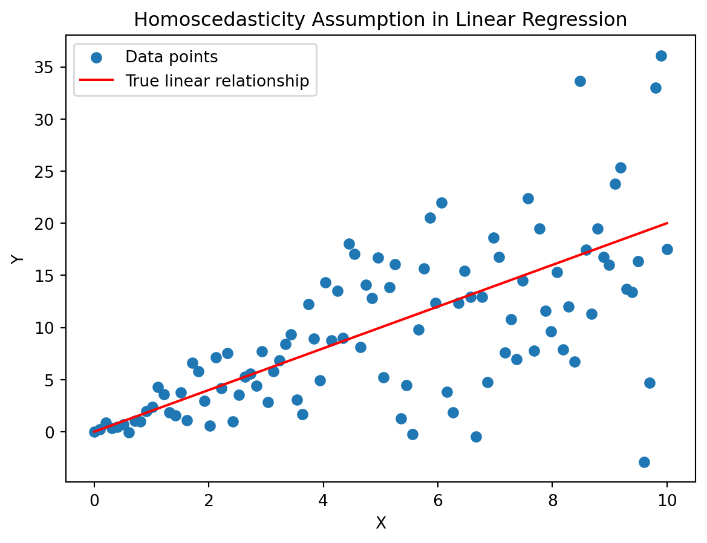

Understanding Regression Analysis with Linear and Nonlinear Models
Regression analysis is a statistical method that examines the relationship between a dependent variable and one or more independent variables. It seeks to model and quantify the strength and nature of this relationship. ### Purpose The primary purpose of regression analysis is to predict the value of the dependent variable based on the values of independent variables. This predictive capability makes it a valuable tool in various fields such as economics, finance, biology, and many more. ## Linear Regression: Theory, Formula, and Assumptions ### Theory Linear regression assumes a linear relationship between the dependent and independent variables. The model is represented as Y = β0 + β1X + ε, where Y is the dependent variable, X is the independent variable, β0 is the intercept, β1 is the slope, and ε is the error term. Sure, let’s walk through an example of linear regression using a real-world dataset, Python code, and a figure. We’ll use the well-known Boston Housing dataset, which is available in the scikit-learn library.
Explanation:
Loading the Data:
We load the model(example) dataset and extract one feature as our independent variable X and the target variable as our dependent variable y.
Splitting the Data:
We split the data into training and testing sets using train_test_split from scikit-learn.
Creating and Fitting the Model:
We create a linear regression model and fit it to the training data using model.fit.
Making Predictions:
We make predictions on the test data using model.predict.
Plotting the Regression Line:
We use matplotlib to create a scatter plot of the actual data points and plot the regression line based on our model’s predictions.
Figure:
image-2.png
Formula
The formula for the slope \(\beta_1\) is calculated as the covariance of X and Y divided by the variance of X. The intercept \(\beta_0\) is the mean of Y minus the product of the slope and the mean of X. Let’s use the same Boston Housing dataset to demonstrate how to calculate the slope \(\beta_1\) and intercept \(\beta_0\) in linear regression using the formulas:
# Import necessary librariesimport numpy as npimport matplotlib.pyplot as pltfrom sklearn.model_selection import train_test_splitfrom sklearn.linear_model import LinearRegressionfrom sklearn import metrics# Generate synthetic datanp.random.seed(42)X =2* np.random.rand(100, 1) # Independent variabley =4+3* X + np.random.randn(100, 1) # Dependent variable with some noise# Split the data into training and testing setsX_train, X_test, y_train, y_test = train_test_split(X, y, test_size=0.2, random_state=42)# Create a linear regression modelmodel = LinearRegression()# Train the model on the training setmodel.fit(X_train, y_train)# Make predictions on the test sety_pred = model.predict(X_test)# Evaluate the modelprint('Mean Absolute Error:', metrics.mean_absolute_error(y_test, y_pred))print('Mean Squared Error:', metrics.mean_squared_error(y_test, y_pred))print('Root Mean Squared Error:', np.sqrt(metrics.mean_squared_error(y_test, y_pred)))# Plot the regression lineplt.scatter(X_test, y_test, color='black')plt.plot(X_test, y_pred, color='blue', linewidth=3)plt.title('Linear Regression Model')plt.xlabel('Independent Variable (X)')plt.ylabel('Dependent Variable (y)')plt.show()
Mean Absolute Error: 0.5913425779189777
Mean Squared Error: 0.6536995137170021
Root Mean Squared Error: 0.8085168605026132
Explanation:
Loading the Data:
We load the model(example) dataset and extract one feature as our independent variable X and the target variable as our dependent variable y.
Calculating Covariance and Variance:
We calculate the covariance and variance using NumPy’s cov and var functions.
Calculating Slope and Intercept:
We use the formulas to calculate the slope (β1) and intercept (β0) based on the covariance and variance.
Generating Predictions:
We generate predictions using the calculated parameters.
Plotting the Regression Line:
We use matplotlib to create a scatter plot of the actual data points and plot the regression line calculated using the formulas.
Interpretation of Regression Coefficients
Linear Regression
In linear regression, the model is represented as: \[ Y = \beta_0 + \beta_1 X + \varepsilon \] where: - Y is the dependent variable. - X is the independent variable. - \(\beta_0\) is the intercept. - \(\beta_1\) is the slope. - \(\varepsilon\) is the error term. ### 1. Interpretation of Slope (\(\beta_1\)): - The slope \(\beta_1\) represents the change in the dependent variable (Y) for a one-unit change in the independent variable (X). ### 2. Interpretation of Intercept (\(\beta_0\)): - The intercept \(\beta_0\) represents the predicted value of the dependent variable (Y) when the independent variable (X) is zero. - The intercept provides a baseline value for the dependent variable when all independent variables are zero. In many cases, this baseline might not have a meaningful interpretation in the context of the problem.
4. Important Considerations:
Units Matter:
Be mindful of the units of both the dependent and independent variables. The interpretation of the slope depends on the units of the variables.
Cautions about Extrapolation:
Extrapolating predictions outside the range of observed data may lead to unreliable results. Interpretation should be limited to the range of observed values.
Consider Other Factors:
Interpretation should consider other relevant factors and the assumptions of the linear regression model.
In summary, interpreting the slope and intercept in linear regression involves understanding the relationship between the variables and making meaningful statements about the changes in the dependent variable associated with changes in the independent variable.
Assumptions in Linear Regression:
Linearity:
Assumption: The relationship between the independent and dependent variables is linear.
Example:
import numpy as npimport matplotlib.pyplot as plt# Generate synthetic data with a linear relationshipX = np.linspace(0, 10, 100)y =2* X + np.random.normal(0, 2, 100) # Linear relationship with some noise# Plot the dataplt.scatter(X, y, label='Data points')plt.plot(X, 2* X, color='red', label='True linear relationship')plt.xlabel('X')plt.ylabel('Y')plt.title('Linearity Assumption in Linear Regression')plt.legend()plt.show()

Independence of Errors:
Assumption: The residuals (errors) should be independent of each other.
Example:
import numpy as npimport matplotlib.pyplot as plt# Generate synthetic data with autocorrelated errorsX = np.linspace(0, 10, 100)y =2* X + np.cumsum(np.random.normal(0, 2, 100)) # Linear relationship with autocorrelated errors# Plot the dataplt.scatter(X, y, label='Data points')plt.plot(X, 2* X, color='red', label='True linear relationship')plt.xlabel('X')plt.ylabel('Y')plt.title('Independence of Errors Assumption in Linear Regression')plt.legend()plt.show()
Homoscedasticity (Constant Variance of Errors):
Assumption: The variance of the errors should be constant across all levels of the independent variable.
Example:
import numpy as npimport matplotlib.pyplot as plt# Generate synthetic data with heteroscedastic errorsX = np.linspace(0, 10, 100)y =2* X + np.random.normal(0, X, 100) # Linear relationship with heteroscedastic errors# Plot the dataplt.scatter(X, y, label='Data points')plt.plot(X, 2* X, color='red', label='True linear relationship')plt.xlabel('X')plt.ylabel('Y')plt.title('Homoscedasticity Assumption in Linear Regression')plt.legend()plt.show()

Normality of Errors:
Assumption: The errors should be normally distributed.
Example:
import numpy as npimport matplotlib.pyplot as plt# Generate synthetic data with non-normally distributed errorsX = np.linspace(0, 10, 100)y =2* X + np.random.exponential(1, 100) # Linear relationship with non-normally distributed errors# Plot the dataplt.scatter(X, y, label='Data points')plt.plot(X, 2* X, color='red', label='True linear relationship')plt.xlabel('X')plt.ylabel('Y')plt.title('Normality of Errors Assumption in Linear Regression')plt.legend()plt.show()
These examples illustrate the importance of checking and validating the assumptions of linear regression before interpreting the results. Violations of these assumptions may lead to biased or inefficient estimates and, therefore, may affect the reliability of the model.
Nonlinear Regression: Introduction and Applications
Introduction
While linear regression assumes a linear relationship between variables, nonlinear regression models provide a more flexible framework by accommodating more complex patterns. In nonlinear regression, the relationship between the dependent and independent variables is expressed as a nonlinear function. This flexibility allows the model to capture intricate and curved relationships that linear models might miss. Nonlinear regression models are particularly useful when the underlying pattern in the data is not well-represented by a straight line. These models open the door to a wide range of possibilities, making them applicable to diverse fields such as physics, biology, economics, and engineering. ### Applications #### Physics: In physics, nonlinear regression is often used to model complex physical phenomena where the relationship between variables follows nonlinear laws. For example, modeling the trajectory of a projectile under the influence of air resistance involves nonlinear equations. #### Biology: Nonlinear regression is frequently applied in biology to model growth curves, enzyme kinetics, and other biological processes. #### Economics: Demand and Supply Modeling In economics, nonlinear regression is applied to model relationships involving demand and supply functions, production functions, and other economic phenomena. These relationships often exhibit nonlinear behavior due to factors like diminishing returns or economies of scale.
Implementing Nonlinear Regression Using Decision Tree
What is a Decision Tree?
A decision tree is one of the most frequently used Machine Learning algorithms for solving regression as well as classification problems. As the name suggests, the algorithm uses a tree-like model of decisions to either predict the target value (regression) or predict the target class (classification). Before diving into how decision trees work, first, let us be familiar with the basic terminologies of a decision tree: - Root Node: - This represents the topmost node of the tree that represents the whole data points. - Splitting: - It refers to dividing a node into two or more sub-nodes. - Decision Node: - They are the nodes that are further split into sub-nodes, i.e., this node that is split is called a decision node. - Leaf / Terminal Node: - Nodes that do not split are called Leaf or Terminal nodes. These nodes are often the final result of the tree. - Branch / Sub-Tree: - A subsection of the entire tree is called branch or sub-tree. - Parent and Child Node: - A node, which is divided into sub-nodes is called a parent node of sub-nodes whereas sub-nodes are the child of the parent node. In the figure above, the decision node is the parent of the terminal nodes (child). - Pruning: - Removing sub-nodes of a decision node is called pruning. Pruning is often done in decision trees to prevent overfitting. ### How does a Decision Tree work? The process of splitting starts at the root node and is followed by a branched tree that finally leads to a leaf node (terminal node) that contains the prediction or the final outcome of the algorithm. Construction of decision trees usually works top-down, by choosing a variable at each step that best splits the set of items. Each sub-tree of the decision tree model can be represented as a binary tree where a decision node splits into two nodes based on the conditions.
Decision trees where the target variable or the terminal node can take continuous values (typically real numbers) are called regression trees which will be discussed in this lesson. If the target variable can take a discrete set of values these trees are called classification trees. ### Decision Tree Regression in Python We will now go through a step-wise Python implementation of the Decision Tree Regression algorithm that we just discussed. #### 1. Import necessary libraries
# Importing the librariesimport numpy as np # for array operationsimport pandas as pd # for working with DataFramesimport requests, io # for HTTP requests and I/O commandsimport matplotlib.pyplot as plt # for data visualization matplotlib inline# scikit-learn modulesfrom sklearn.model_selection import train_test_split # for splitting the datafrom sklearn.metrics import mean_squared_error # for calculating the cost functionfrom sklearn.tree import DecisionTreeRegressor # for building the model
2. Importing the data set
The dataset consists of data related to petrol consumptions (in millions of gallons) for 48 US states. This value is based upon several features such as the petrol tax (in cents), Average income (dollars), paved highways (in miles), and the proportion of the population with a driver’s license. We will be loading the data set using the read_csv() function from the pandas module and store it as a pandas DataFrame object.
# Importing the dataset from the url of the dataseturl ="https://drive.google.com/u/0/uc?id=1mVmGNx6cbfvRHC_DvF12ZL3wGLSHD9f_&export"data = requests.get(url).content# Reading the datadataset = pd.read_csv(io.StringIO(data.decode('utf-8')))dataset.head()
Petrol_tax
Average_income
Paved_Highways
Population_Driver_licence(%)
Petrol_Consumption
0
9.0
3571
1976
0.525
541
1
9.0
4092
1250
0.572
524
2
9.0
3865
1586
0.580
561
3
7.5
4870
2351
0.529
414
4
8.0
4399
431
0.544
410
3. Separating the features and the target variable
After loading the dataset, the independent variable and the dependent variable need to be separated. Our concern is to model the relationships between the features (Petrol_tax, Average_income, etc.) and the target variable (Petrol_consumption) in the dataset.
4. Splitting the data into a train set and a test set
We use the train_test_split() module of scikit-learn for splitting the data into a train set and a test set. We will be using 20% of the available data as the testing set and the remaining data as the training set.
# Splitting the dataset into training and testing set (80/20)x_train, x_test, y_train, y_test = train_test_split(x, y, test_size =0.2, random_state =42)
5. Fitting the model to the training dataset
After splitting the data, let us initialize a Decision Tree Regressor model and fit it to the training data. This is done with the help of DecisionTreeRegressor() module of scikit-learn.
# Initializing the Decision Tree Regression modelmodel = DecisionTreeRegressor(random_state =0)# Fitting the Decision Tree Regression model to the datamodel.fit(x_train, y_train)
DecisionTreeRegressor(random_state=0)
In a Jupyter environment, please rerun this cell to show the HTML representation or trust the notebook. On GitHub, the HTML representation is unable to render, please try loading this page with nbviewer.org.
DecisionTreeRegressor(random_state=0)
6. Calculating the loss after training
Let us now calculate the loss between the actual target values in the testing set and the values predicted by the model with the use of a cost function called the Root Mean Square Error (RMSE). \[ RMSE= \sqrt{(\frac{1}{n})\Sigma_{i=1}^{n}(y_{i}-\hat{y_{i}})^2}\] The RMSE of a model determines the absolute fit of the model to the data. In other words, it indicates how close the actual data points are to the model’s predicted values. A low value of RMSE indicates a better fit and is a good measure for determining the accuracy of the model’s predictions.
# Predicting the target values of the test sety_pred = model.predict(x_test)# RMSE (Root Mean Square Error)rmse =float(format(np.sqrt(mean_squared_error(y_test, y_pred)), '.3f'))print("\nRMSE: ", rmse)
RMSE: 131.142
7. Visualizing the decision tree
After building and executing the model, we can also view the tree structure of the model created using a tool WebGraphviz. We will be copying the content of the ‘tree_structure.dot’ file saved to the local working directory to the input area on the WebGraphviz tool which then generates the visualized structure of our Decision tree.
from sklearn.tree import export_graphviz # export the decision tree model to a tree_structure.dot file # paste the contents of the file to webgraphviz.comexport_graphviz(model, out_file ='tree_structure.dot', feature_names =['Petrol_tax', 'Average_income', 'Paved_Highways', 'Population_Driver_licence(%)'])
The image will look like this:
Conclusion
In this blog post, we explored the fundamentals of regression analysis, a powerful statistical technique widely used in various fields to model relationships between variables. We covered both linear and nonlinear regression, delving into their applications and theories.


 - Root Node: - This represents the topmost node of the tree that represents the whole data points. - Splitting: - It refers to dividing a node into two or more sub-nodes. - Decision Node: - They are the nodes that are further split into sub-nodes, i.e., this node that is split is called a decision node. - Leaf / Terminal Node: - Nodes that do not split are called Leaf or Terminal nodes. These nodes are often the final result of the tree. - Branch / Sub-Tree: - A subsection of the entire tree is called branch or sub-tree. - Parent and Child Node: - A node, which is divided into sub-nodes is called a parent node of sub-nodes whereas sub-nodes are the child of the parent node. In the figure above, the decision node is the parent of the terminal nodes (child). - Pruning: - Removing sub-nodes of a decision node is called pruning. Pruning is often done in decision trees to prevent overfitting. ### How does a Decision Tree work? The process of splitting starts at the root node and is followed by a branched tree that finally leads to a leaf node (terminal node) that contains the prediction or the final outcome of the algorithm. Construction of decision trees usually works top-down, by choosing a variable at each step that best splits the set of items. Each sub-tree of the decision tree model can be represented as a binary tree where a decision node splits into two nodes based on the conditions.
- Root Node: - This represents the topmost node of the tree that represents the whole data points. - Splitting: - It refers to dividing a node into two or more sub-nodes. - Decision Node: - They are the nodes that are further split into sub-nodes, i.e., this node that is split is called a decision node. - Leaf / Terminal Node: - Nodes that do not split are called Leaf or Terminal nodes. These nodes are often the final result of the tree. - Branch / Sub-Tree: - A subsection of the entire tree is called branch or sub-tree. - Parent and Child Node: - A node, which is divided into sub-nodes is called a parent node of sub-nodes whereas sub-nodes are the child of the parent node. In the figure above, the decision node is the parent of the terminal nodes (child). - Pruning: - Removing sub-nodes of a decision node is called pruning. Pruning is often done in decision trees to prevent overfitting. ### How does a Decision Tree work? The process of splitting starts at the root node and is followed by a branched tree that finally leads to a leaf node (terminal node) that contains the prediction or the final outcome of the algorithm. Construction of decision trees usually works top-down, by choosing a variable at each step that best splits the set of items. Each sub-tree of the decision tree model can be represented as a binary tree where a decision node splits into two nodes based on the conditions.